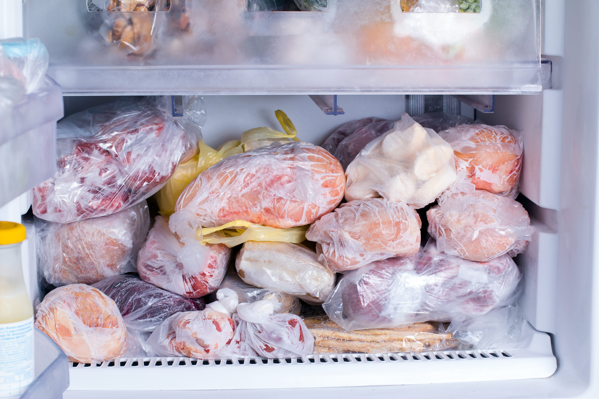
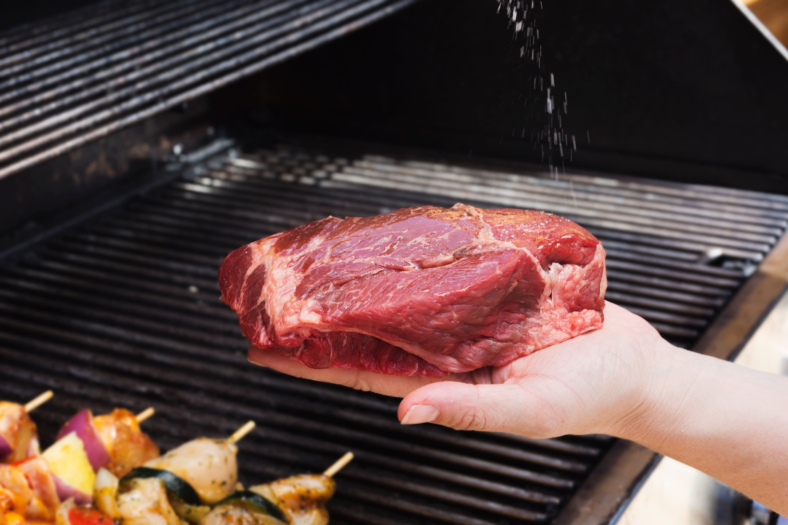
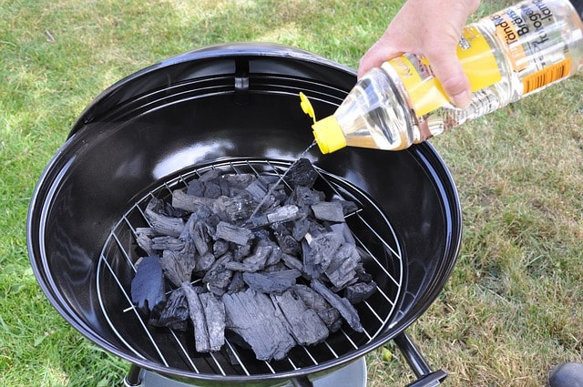
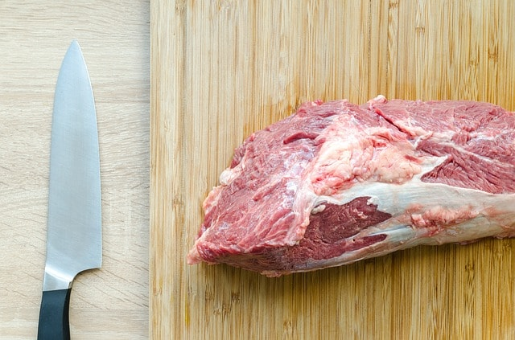
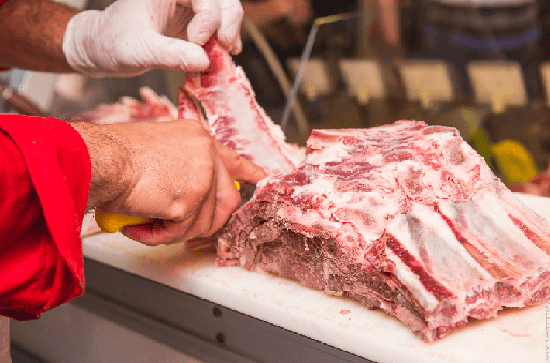
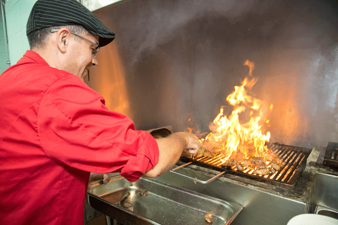

יש הרבה מיתוסים שנבנו עם השנים על בשר.
איך נכון להכין , איך להפשיר ואיך לטפל בו.
איגדנו עבורכם את הטיפים החשובים ביותר לטיפול בבשר:
-
 לא מקפיאים בשנית בשר שכבר הופשר -

.בחלקים פנימיים ובשר טחון ניתן להשתמש עד יומיים מהרכישה. בשר חתוך ניתן לשמור עד ארבעה ימים מתאריך הרכישה -
 אין להשתמש בבשר קפוא כאשר רוצים לצלותו על מנגל -
 שימוש בגחלים המכילים חומר בעירה עלול לגרום לטעמי לוואי בבשר -
בעת צלייה על רשת ,המרחק המומלץ בין הרשת למקור החום הוא 10 ס"מ ומעלה -
מומלץ לתבל את הבשר רק לאחר צריבתו משני הצדדים -
 נקיון משטח העבודה לפני ואחרי הוא חשוב ביותר, זהו מקור לבקטריות -
 בקניית בשר טרי יש להקפיד כי הבשר נפרס מתוך נתח שלם ע"י הקצב -
 בזמן הנחת הבשר הגחלים נדלקות- אין לכבותן בעזרת מים
יש לכם טיפ מנצח?
שתפו אותנו!